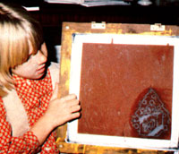
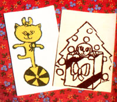

My sister Katie and I first tried making silkscreened cards for Christmas gifts back in 1978. They were very popular, so we started giving them as birthday presents and as gifts to special friends. (One of those friends is my piano teacher. She likes her cards so much she doesn't even use them!)
Not long ago, when Katie and I went to a church fair and saw other people selling their handmade products, we decided to sell our cards. So we rented a booth and "went into business".
Silk-screening note cards can take a long time, but the results are worth the effort. You may want to make some yourself. It can give you a chance to be creative and an opportunity to make some money for extra expenses such as skating and bowling.
HOW TO DO IT
First of all, you'll need a screen for printing your cards. My dad made ours. You can also buy one at a good crafts store.
Second, you'll need to create a card design. Make the drawing the exact same size that you want it to turn out on the note cards. And keep your design simple (don't use any small lines or little details). This will make it easier for you to do the next step: transferring your design to the screen.
To do this, put your drawing under the screen and then lightly copy the entire pattern on the screen with a pencil. Next, go over the pencil marks with silkscreen drawing fluid. (We buy a brand called Speedball.) Use the smallest brush possible when you do this.
When all the areas covered with drawing fluid are completely dry, spread screen filler or blockout solution all over the bottom side of the screen and let this liquid dry completely, too. Then run or spray cold water onto the top of the screen. Make sure the water hits the areas covered with the drawing fluid. This will wash the screen filler and drawing fluid off the areas that will be printed on your cards. The rest of the screen should remain covered with the blockout solution. (You can use more filler to repaint any small holes that may appear on the covered part.)
After that, draw lines on the board under the screen to show you where to place your paper so the design will be printed in the right place on the card.
Now, you're ready to gather paper and ink for printing. You'll have to buy the silk-screening ink. You can use ready-cut plain stationery and envelopes, too, or you might want to cut your own cards from large pieces of watercolor paper. The sheets are expensive, but they do make very pretty cards.
Finally, you can start to print. Set one card in place under the screen and pour the special ink onto the screen. Then use a rubber-edged squeegee to spread the ink evenly across the fabric. (My parents sometimes help me do this part.) Your first few prints may not turn out too well, but they'll get better as you go along. Just take your time and have fun. Don't hurry or you'll get splotches all over your cards.
You can make as many cards as you want, but be sure you have plenty of drying space for them. One time we covered our whole living room floor with prints spread out to dry, and then discovered we could hardly get out of the rooml After your cards are all printed, it's time to clean your equipment. (You'll find the instructions you need on the ink and blockout solution cans.) Then when the cards are all dry, you can stack them into packages with their envelopes.
OUR SILK-SCREENING BUSINESS
It takes my sister and me two hours to design a new note card and to trace its pattern on the screen. We can print 600 sheets in three hours. And, after the cards are all dry, we can package them up for sale in one hour.
Katie and I spent $2.00 to rent a booth at the church fair, $11 for the paper and envelopes we used, and $1.00 for ink and fluids. (We already had our screen and some fluids, so that cut down our expenses. It will cost you more the first time you try this because you'll have to buy all the supplies.) That's a total of $14.
We sold 20 packages of cards at the church fair for $1.25 each. (There were 15 cards in each packet.) So our income from the fair was $25, and after we subtracted our expenses, our profit was $11! My sister and I were both pleased with the money and the project. In fact, we were so happy that we plan to make and sell silk-screened note cards again . . . and again . . . and again....
EDITOR'S NOTE: Since many of the printing inks and cleanup solvents are very hazardous if inhaled or ingested, silk-screening should always be done in wellventilated areas and under adult supervision. Wearing an organic vapor mask when printing and latex gloves when cleaning up may also be advisable.
|
To view the instructions for making the screen, click on the link "a screen for printing" near the top of the article. |
 |
 |